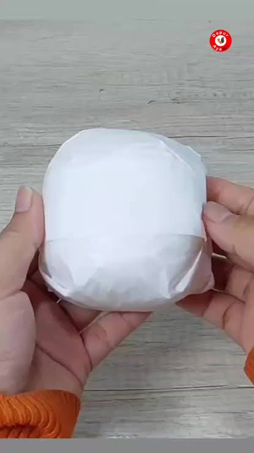

Rasa lokal, sejak 2015
Gurihnya bikin
balik lagi.
Ayam Kentucky dan ayam goreng serundeng Laos yang renyah, gurih, dan meresap sampai ke tulang. Pokoknya JOSS.
Dari Sokaraja, untuk teman makanmu.
Menu favorit
Ayam Kentucky
Rp7.000
2015
Mulai melayani
2
Olahan ayam andalan
Sokaraja
Bangga jadi kuliner lokal
Cerita kami
Rasa rumahan,
semangat lokal.
JOSS CHICKEN adalah usaha kuliner lokal di Jl. Kebutuh, Sokaraja Kulon, Banyumas. Sejak 2015, kami menyajikan ayam Kentucky dan ayam goreng serundeng Laos dengan harga yang bersahabat.



Mampir, yuk!
Siap jadi menu
favoritmu?
Jl. Kebutuh RT 04 RW 04, Sokaraja Kulon,
Sokaraja, Banyumas
JOSS CHICKEN · Sokaraja, Banyumas